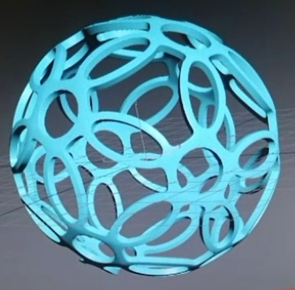

C++
- Program created in Object Oriented C++ in order to prove our understanding of setting and retrieving class member data.
This program is designed to declare a list of states and state info and then display nicely in a grid like manner.
Link to imp file Link to header file Link to driver
CAD
- 3D Models created in my independent study over computer aided design. Models created in Autodesk inventor to resemble legos, dice and an action figure resembling Stan from South Park. All were 3D printed using the STL files created in Autodesk Inventor.
- Animated object created in 3DS Max to resemble a cube from popular game title Portal. Tumbling animation also designed in 3DS Max
Link to mp4 file
- Another animated object created in 3DS Max of just some hollow sphere with holes. Same kind of animation as with the cube.
Link to mp4 file

Linux
- Bash script created in Linux designed to copy all files over from a specified readable directory to a relative target directory and append _copy to the end of the file name. It also takes a designated word or phrase and replaces it with another different designated word or phrase then displays how many lines the words were on
HTML/CSS
- This online portfolio was part of my HTML web design midterm
Link to CSS file